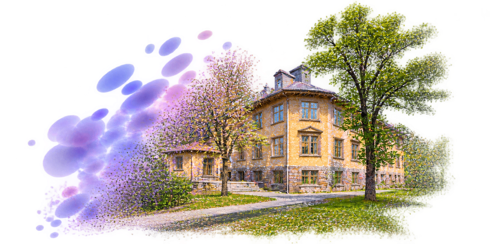

Research/ Collaboration
Biweekly discussions on Gaussian splatting and related recent research. Led by Dr. Prashant Goswami , Senior Associate Professor (Biträdande Professor), Blekinge Institute of Technology (BTH).

Next meeting
Loading meetings…
Past meetings
DATEPAPER / PRESENTERMATERIALS